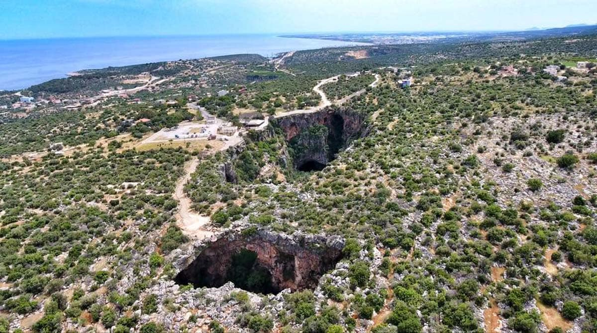
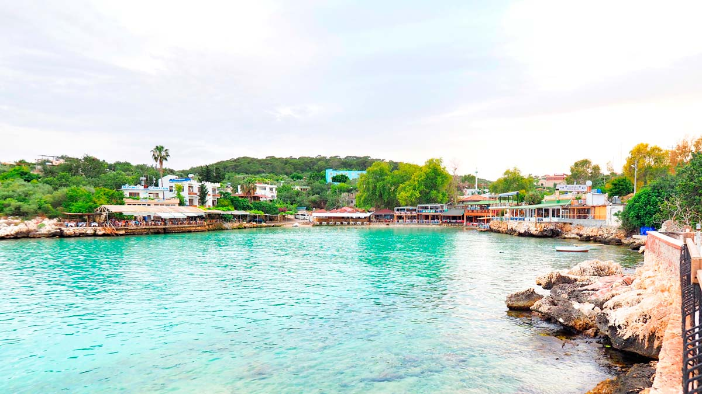
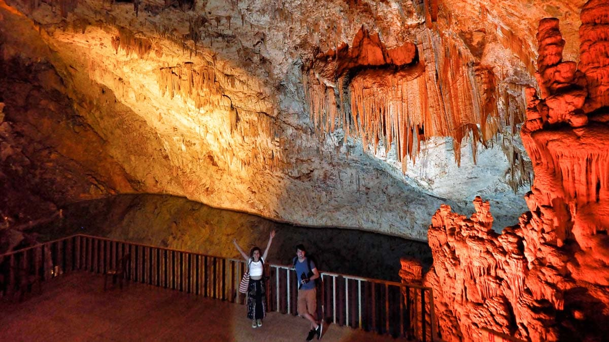
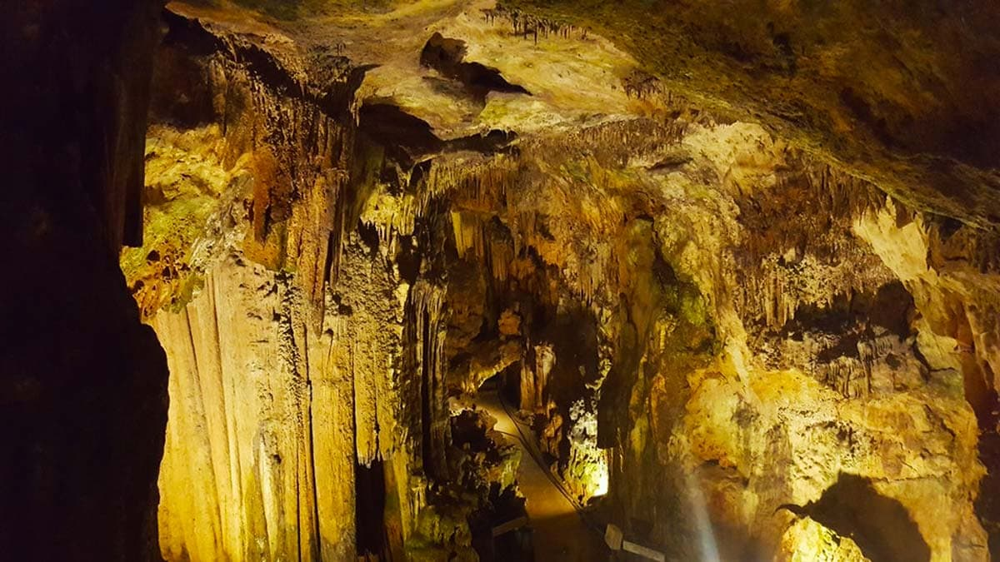
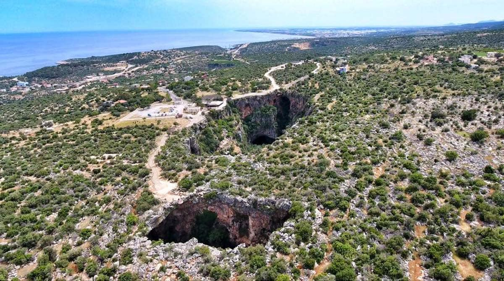
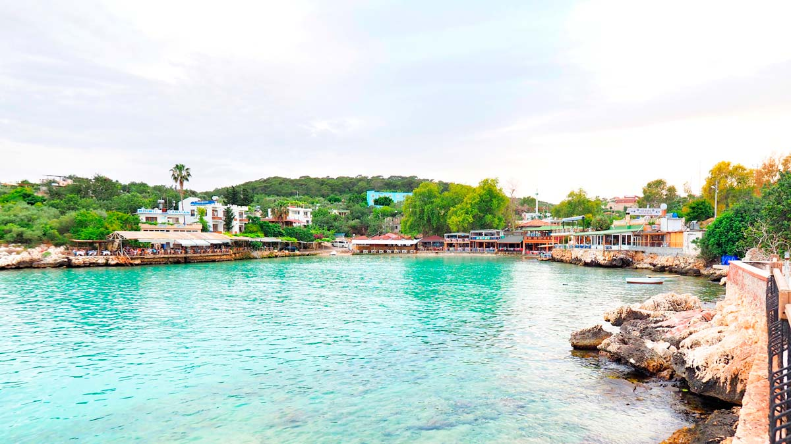
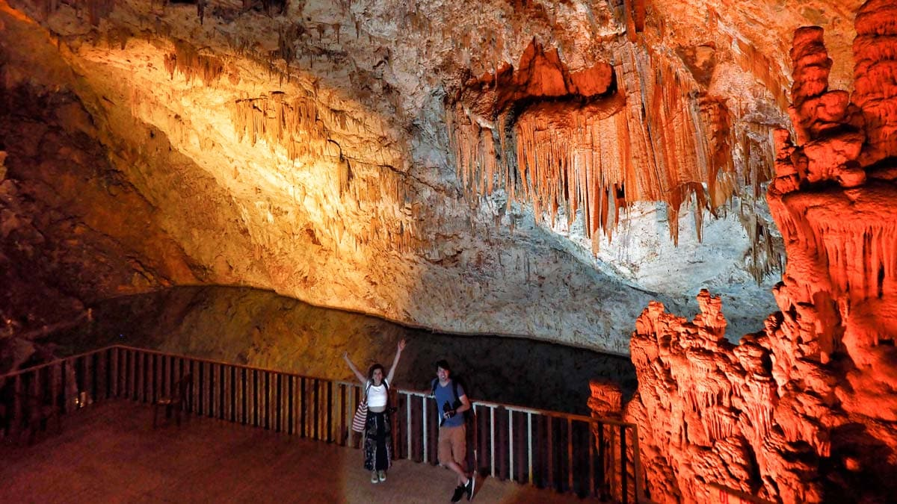
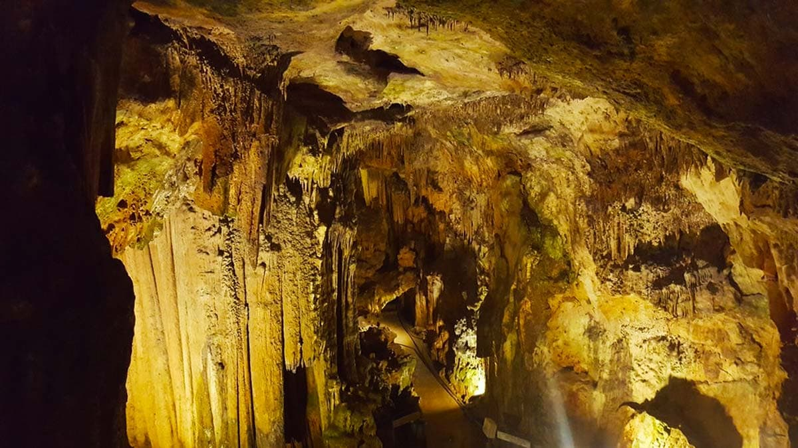

Fotoğraf Galerisi
Mersin gerek tarihi gerekse yemek kültürü açısından yükselen bir şehir.Öncelikle Mersin'e gelip de Mersin'le bütünleşen lezzetli "Tantunisini" yemeden gitmeyin.Bunun yanında diğer lahmacunlardan biraz daha farklı olan "Fındık Lahmacun" tantunidem sonra gözde yemeklerden birisi konumundadır.Birçok yemek kültürü olan bu şehir yemekleri saymakla bitmez.Yemek kültürünün yanında tarihi olarak da Mersin'in en önemli turistik yeri olan "Kız Kalesi" Mersin'i ziyarete gelen insanların en önemli durak yerlerinden birisidir.Kessinlikle Mersin'e geldiğinizde Kız Kalesini görmeden gitmeyin.Kız Kalesi'nden sonra Mersin'in en güzel yerlerini sizler için aşağıdaki fotoğraf galersinde derledik.Sırasıyla:
1) Tantuni 2) Fındık Lahmacun 3) Kız Kalesi 4) Yerköprü Şelalesi
5) Cennet – Cehennem 6) Narlıkuyu 7) Gilindire Mağarası 8) Astım Mağarası
 






